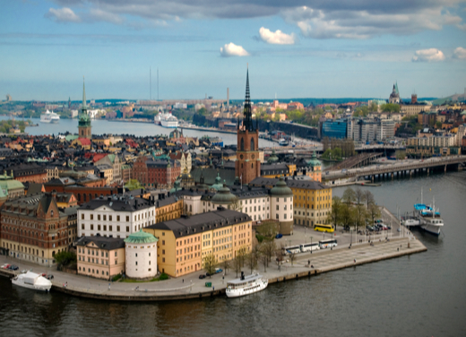

Nordens största stad
Stockholm är Sveriges huvudstad samt landets kulturella, politiska, mediala och ekonomiska centrum. Det är Sveriges såväl som Nordens folkrikaste tätort.
Stockholm är Sveriges huvudstad samt landets kulturella, politiska, mediala och ekonomiska centrum. Det är Sveriges såväl som Nordens folkrikaste tätort.
Tre av Unescos världsarv ligger i Stockholmsområdet; Drottningholms slott och Birka (båda i Ekerö kommun), samt Skogskyrkogården (Stockholms kommun).
Under flera hundra år utgjorde Gamla stan den egentliga staden. Statsdelen bildades 1926 och hade år 2006 cirka 3 000 invånare. På Gamla stans norra spets återfinna Stockholms slott
